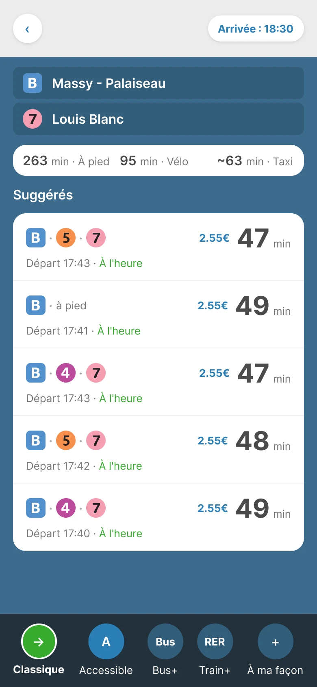
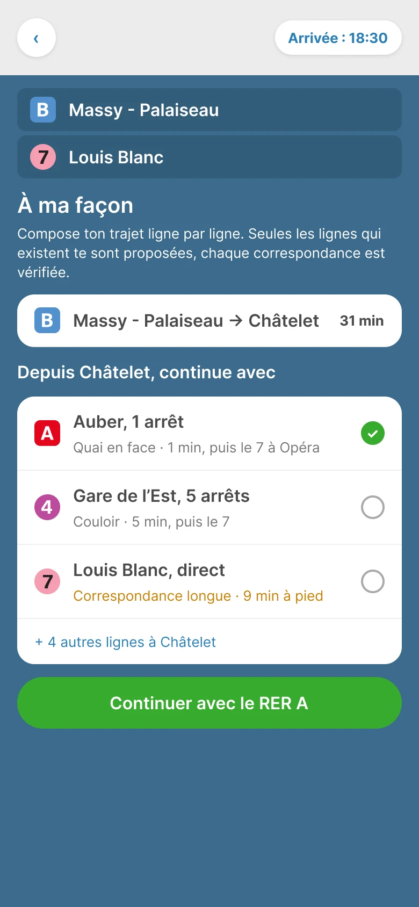
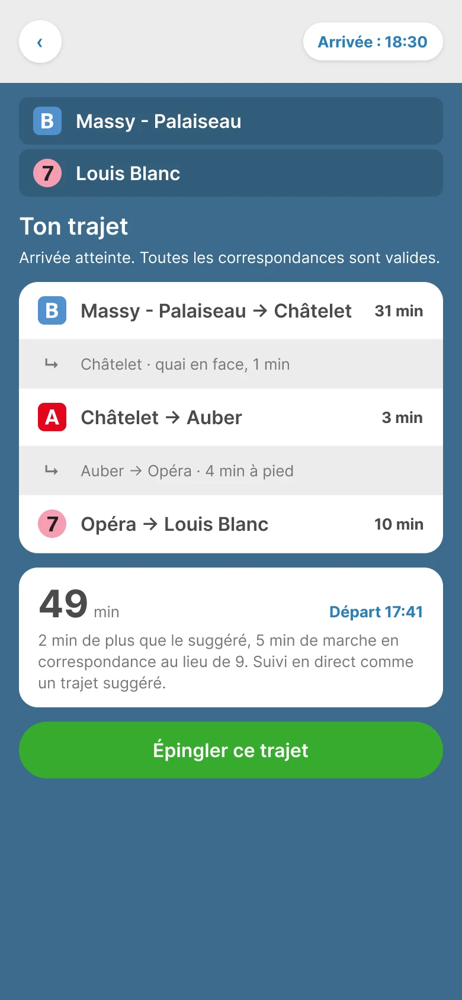
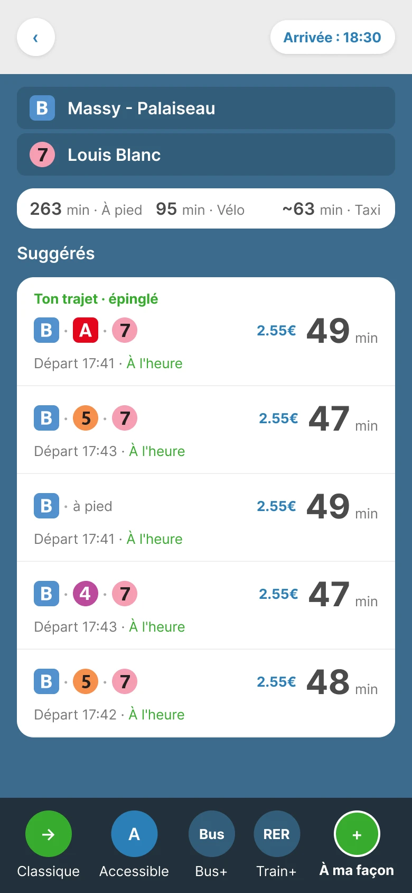

Brief to ShipChapitre build
L'itinéraire que l'application ne me propose pas
« À ma façon » est un concept de mode optionnel pour Citymapper. Je compose mon trajet ligne par ligne. L'application garde le reste : les horaires en direct, l'heure d'arrivée, le suivi.
Le point de départ
Un trajet que je connais par cœur
Je vais souvent de Massy - Palaiseau à Louis Blanc, voir une amie proche. Je planifie avec « arriver à ». L'application me répond toujours la même chose : le RER B jusqu'à Châtelet, puis la ligne 7.
Moi, je fais autrement. Le B jusqu'à Châtelet. Le RER A pour un seul arrêt, jusqu'à Auber. Puis la 7 à Opéra, dans le même complexe.
À Châtelet, la correspondance vers la 7 est longue et stressante. Il y a la foule, des couloirs sans fin, des tapis roulants et des escalators souvent en panne. Je m'y sens moins en sécurité. À Opéra, c'est propre, direct, et la sécurité est plus visible.
Mon trajet existe. L'application ne me le propose jamais.
En trois chiffres
1trajet que je fais tout le temps
0fois proposé par l'application
9 minde correspondance à Châtelet, contre 4 min à Opéra
Chiffres illustratifs, tirés de mon expérience du trajet.
Sur le mur
Pourquoi mon trajet disparaît
- Il n'est pas oublié, il est élagué.Le calculateur connaît mon trajet. Il l'écarte parce qu'il est « dominé » : un autre fait mieux en temps, en correspondances et en marche.
- Je n'optimise pas la même chose.Ce qui compte pour moi pèse à peine dans son calcul : la façon dont une correspondance se vit.
- La donnée sait déjà.Île-de-France Mobilités publie le réseau en GTFS ouvert (licence ODbL), y compris les cheminements à pied dans les stations.
- Donc c'est un choix produit.Pas un mur technique.
- L'idée.Un mode optionnel où je compose le trajet, et où je garde les horaires en direct, « arriver à » et le suivi.
- Le risque.Si la correspondance que j'ai épinglée se passe mal, à qui la faute ?
L'algorithme optimise. Moi, je préfère.
Composer son trajet, garder l'intelligence
Le prototype est réel. Il est branché sur un petit jeu de données et il se manipule. Les quatre moments ci-dessous le placent au bon endroit, mais tu peux aussi le parcourir librement.
-
Rien ne change pour qui veut laisser l'application décider. « À ma façon » est un onglet de plus dans la barre des modes.
-
À chaque station, je ne vois que les lignes qui la desservent et qui me rapprochent de l'arrivée. Chaque option affiche sa correspondance. Les longues passent en couleur d'alerte.
-
Arrivé à Louis Blanc, le trajet se résume sur une carte : les tronçons, les correspondances, la durée totale. L'heure de départ est calculée depuis l'heure d'arrivée.
-
Mon trajet remonte en haut des suggestions, avec son étiquette et son état en temps réel. Il se comporte comme un trajet proposé par l'application.
Prototype interactif
Aperçu ci-dessous. Le plein écran est plus confortable pour le manipuler.
Tu es dans le prototypeExplore « À ma façon ».
Concept indépendant, non affilié à Citymapper. Données illustratives.
Contribuer à un système existant
Je n'ai pas redessiné Citymapper. J'ai ajouté le minimum, dans son langage visuel. Tout est construit dans Figma, sur des tokens et en auto layout. Les pastilles de ligne sont celles qui existent déjà, réutilisées telles quelles.
- Un onglet de mode, dans la barre du bas.
- Une ligne de sélection avec bouton radio, pour choisir la ligne suivante.
- Une ligne de correspondance, entre deux tronçons.
- Une étiquette « Ton trajet · épinglé ».

01 · Résultats, nouveau mode 
02a · Choix de ligne 
02b · Trajet composé 
03 · Trajet épinglé
Pourquoi ça n'existe pas (encore)
La plupart des gens veulent que l'application décide. C'est sa promesse, et elle la tient bien.
Un trajet que l'application n'a pas choisi pose deux questions. Est-il fiable ? Et s'il se passe mal, qui en est responsable ?
D'où un mode optionnel, pas un remplacement. On y entre exprès. On sait que le trajet est le sien.
À tester : afficher le coût d'une correspondance comme un critère visible, pas seulement la durée totale.
Où la machine a mené, où j'ai repris la main
Claude Code et le connecteur Figma ont construit vite : les tokens, les écrans, le code.
Claude a d'abord redessiné les pastilles de ligne à partir de zéro. Je lui ai fait réutiliser celles que j'avais extraites.
Il a utilisé du positionnement absolu. J'ai exigé de l'auto layout partout.
Il a surdimensionné l'en-tête. Je l'ai corrigé à la main, et il a pris ma correction comme modèle pour la suite.
Les temps de trajet restent illustratifs. Ils le resteront tant qu'ils ne sont pas remplacés par les données d'Île-de-France Mobilités.